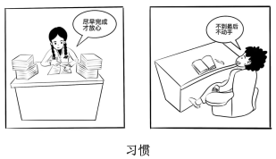

2020 年全国硕士研究生招生考试英语（一）
Section I Use of English
Directions:
Read the following text. Choose the best word(s) for each numbered blank and mark A, B, C or D on the ANSWER SHEET. (10 points)
Even if families don’t sit down to eat together as frequently as before, millions of Britons will nonetheless have got a share this weekend of one of the nation’s great traditions: the Sunday roast. 1 a cold winter’s day, few culinary pleasures can 2 it. Yet as we report now, the food police are determined that this 3 should be rendered yet another guilty pleasure 4 to damage our health.
The Food Standards Authority (FSA) has 5 a public warning about the risks of a compound called acrylamide that forms in some foods cooked 6 high temperatures. This means that people should 7 crisping their roast potatoes, reject thin-crust pizzas and only 8 toast their bread. But where is the evidence to support such alarmist advice? 9 studies have shown that acrylamide can cause neurological damage in mice, there is no 10 evidence that it causes cancer in humans.
Scientists say the compound is 11 to cause cancer but have no hard scientific proof. 12 the precautionary principle, it could be argued that it is 13 to follow the FSA advice. 14 , it was rumoured that smoking caused cancer for years before the evidence was found to prove a 15 .
Doubtless a piece of boiled beef can always be 16 up on Sunday alongside some steamed vegetables, without the Yorkshire pudding and no wine. But would life be worth living? 17 , the FSA says it is not telling people to cut out roast foods 18 , but to reduce their lifetime intake. However, its 19 risks coming across as being pushy and overprotective. Constant health scares just 20 with no one listening.
Section II Reading Comprehension
Part A
Directions:
Read the following four texts. Answer the questions after each text by choosing A, B, C or D. Mark your answers on the ANSWER SHEET. (40 points)
Text 1
A group of Labour MPs, among them Yvette Cooper, are bringing in the new year with a call to institute a UK “town of culture” award. The proposal is that it should sit alongside the existing city of culture title, which was held by Hull in 2017, and has been awarded to Coventry for 2021. Cooper and her colleagues argue that the success of the crown for Hull, where it brought in £220m of investment and an avalanche of arts, ought not to be confined to cities. Britain’s towns, it is true, are not prevented from applying, but they generally lack the resources to put together a bid to beat their bigger competitors. A town of culture award could, it is argued, become an annual event, attracting funding and creating jobs.
Some might see the proposal as a booby prize for the fact that Britain is no longer able to apply for the much more prestigious title of European capital of culture, a sought-after award bagged by Glasgow in 1990 and Liverpool in 2008. A cynic might speculate that the UK is on the verge of disappearing into an endless fever of self-celebration in its desperation to reinvent itself for the post-Brexit world: after town of culture, who knows what will follow — village of culture? Suburb of culture? Hamlet of culture?
It is also wise to recall that such titles are not a cure-all. A badly run “year of culture” washes in and out of a place like the tide, bringing prominence for a spell but leaving no lasting benefits to the community. The really successful holders of such titles are those that do a great deal more than fill hotel bedrooms and bring in high-profile arts events and good press for a year. They transform the aspirations of the people who live there; they nudge the self-image of the city into a bolder and more optimistic light. It is hard to get right, and requires a remarkable degree of vision, as well as cooperation between city authorities, the private sector, community groups and cultural organisations. But it can be done: Glasgow’s year as European capital of culture can certainly be seen as one of a complex series of factors that have turned the city into the powerhouse of art, music and theatre that it remains today.
A “town of culture” could be not just about the arts but about honouring a town’s peculiarities — helping sustain its high street, supporting local facilities and above all celebrating its people. Jeremy Wright, the culture secretary, should welcome this positive hope-filled proposal, and turn it into action.
21. Cooper and her colleagues argue that a “town of culture” award could ____
22. According to Paragraph 2, the proposal might be regarded by some as ____
23. The author suggests that a title holder is successful only if it ____
24. Glasgow is mentioned in Paragraph 3 to present ____
25. What is the author’s attitude towards the proposal?
Text 2
Scientific publishing has long been a licence to print money. Scientists need journals in which to publish their research, so they will supply the articles without monetary reward. Other scientists perform the specialised work of peer review also for free, because it is a central element in the acquisition of status and the production of scientific knowledge.
With the content of papers secured for free, the publisher needs only to find a market for its journal. Until this century, university libraries were not very price sensitive. Scientific publishers routinely report profit margins approaching 40% on their operations, at a time when the rest of the publishing industry is in an existential crisis.
The Dutch giant Elsevier, which claims to publish 25% of the scientific papers produced in the world, made profits of more than £900m last year, while UK universities alone spent more than £210m in 2016 to enable researchers to access their own publicly funded research; both figures seem to rise unstoppably despite increasingly desperate efforts to change them.
The most drastic, and thoroughly illegal, reaction has been the emergence of Sci-Hub, a kind of global photocopier for scientific papers, set up in 2012, which now claims to offer access to every paywalled article published since 2015. The success of Sci-Hub, which relies on researchers passing on copies they have themselves legally accessed, shows the legal ecosystem has lost legitimacy among its users and must be transformed so that it works for all participants.
In Britain the move towards open access publishing has been driven by funding bodies. In some ways it has been very successful. More than half of all British scientific research is now published under open access terms: either freely available from the moment of publication, or paywalled for a year or more so that the publishers can make a profit before being placed on general release.
Yet the new system has not worked out any cheaper for the universities. Publishers have responded to the demand that they make their product free to readers by charging their writers fees to cover the costs of preparing an article. These range from around £500 to $5,000. A report last year pointed out that the costs both of subscriptions and of these “article preparation costs” had been steadily rising at a rate above inflation. In some ways the scientific publishing model resembles the economy of the social internet:
labour is provided free in exchange for the hope of status, while huge profits are made by a few big firms who run the market places. In both cases, we need a rebalancing of power.
26. Scientific publishing is seen as “a licence to print money” partly because ____
27. According to Paragraphs 2 and 3, scientific publishers like Elsevier have ____
28. How does the author feel about the success of Sci-Hub?
29. It can be learned from Paragraphs 5 and 6 that open access terms ____
30. Which of the following characterises the scientific publishing model?
Text 3
Progressives often support diversity mandates as a path to equality and a way to level the playing field. But all too often such policies are an insincere form of virtue-signaling that benefits only the most privileged and does little to help average people.
A pair of bills sponsored by Massachusetts state Senator Jason Lewis and House Speaker Pro Tempore Patricia Haddad, to ensure “gender parity” on boards and commissions, provide a case in point.
Haddad and Lewis are concerned that more than half the state-government boards are less than 40 percent female. In order to ensure that elite women have more such opportunities, they have proposed imposing government quotas. If the bills become law, state boards and commissions will be required to set aside 50 percent of board seats for women by 2022.
The bills are similar to a measure recently adopted in California, which last year became the first state to require gender quotas for private companies. In signing the measure, California’s Governor Jerry Brown admitted that the law, which expressly classifies people on the basis of sex, is probably unconstitutional.
The US Supreme Court frowns on sex-based classifications unless they are designed to address an “important” policy interest. Because the California law applies to all boards, even where there is no history of prior discrimination, courts are likely to rule that the law violates the constitutional guarantee of “equal protection”.
But are such government mandates even necessary? Female participation on corporate boards may not currently mirror the percentage of women in the general population, but so what?
The number of women on corporate boards has been steadily increasing without government interference. According to a study by Catalyst, between 2010 and 2015 the share of women on the boards of global corporations increased by 54 percent.
Requiring companies to make gender the primary qualification for board membership will inevitably lead to less experienced private sector boards. That is exactly what happened when Norway adopted a nationwide corporate gender quota.
Writing in The New Republic, Alice Lee notes that increasing the number of opportunities for board membership without increasing the pool of qualified women to serve on such boards has led to a “golden skirt” phenomenon, where the same elite women scoop up multiple seats on a variety of boards.
Next time somebody pushes corporate quotas as a way to promote gender equity, remember that such policies are largely self-serving measures that make their sponsors feel good but do little to help average women.
31. The author believes that the bills sponsored by Lewis and Haddad will ____
32. Which of the following is true of the California measure?
33. The author mentions the study by Catalyst to illustrate ____
34. Norway’s adoption of a nationwide corporate gender quota has led to ____
35. Which of the following can be inferred from the text?
Text 4
Last Thursday, the French Senate passed a digital services tax, which would impose an entirely new tax on large multinationals that provide digital services to consumers or users in France. Digital services include everything from providing a platform for selling goods and services online to targeting advertising based on user data, and the tax applies to gross revenue from such services. Many French politicians and media outlets have referred to this as a “GAFA tax,” meaning that it is designed to apply primarily to companies such as Google, Apple, Facebook and Amazon — in other words, multinational tech companies based in the United States.
The digital services tax now awaits the signature of President Emmanuel Macron, who has expressed support for the measure, and it could go into effect within the next few weeks. But it has already sparked significant controversy, with the United States trade representative opening an investigation into whether the tax discriminates against American companies, which in turn could lead to trade sanctions against France.
The French tax is not just a unilateral move by one country in need of revenue. Instead, the digital services tax is part of a much larger trend, with countries over the past few years proposing or putting in place an alphabet soup of new international tax provisions. These have included Britain’s DPT (diverted profits tax), Australia’s MAAL (multinational antiavoidance law), and India’s SEP (significant economic presence) test, to name but a few. At the same time, the European Union, Spain, Britain and several other countries have all seriously contemplated digital services taxes.
These unilateral developments differ in their specifics, but they are all designed to tax multinationals on income and revenue that countries believe they should have a right to tax, even if international tax rules do not grant them that right. In other words, they all share a view that the international tax system has failed to keep up with the current economy.
In response to these many unilateral measures, the Organization for Economic Cooperation and Development (OECD) is currently working with 131 countries to reach a consensus by the end of 2020 on an international solution. Both France and the United States are involved in the organization’s work, but France’s digital services tax and the American response raise questions about what the future holds for the international tax system.
France’s planned tax is a clear warning: Unless a broad consensus can be reached on reforming the international tax system, other nations are likely to follow suit, and American companies will face a cascade of different taxes from dozens of nations that will prove burdensome and costly.
36. The French Senate has passed a bill to ____
37. It can be learned from Paragraph 2 that the digital services tax ____
38. The countries adopting the unilateral measures share the opinion that ____
39. It can be learned from Paragraph 5 that the OECD’s current work ____
40. Which of the following might be the best title for this text?
Part B
Directions:
Read the following text and answer the questions by choosing the most suitable subheading from the list A-G for each of the numbered paragraphs (41-45). There are two extra subheadings which you do not need to use. Mark your answers on the ANSWER SHEET. (10 points)
In a social situation, eye contact with another person can show that you are paying attention in a friendly way. But it can also be antagonistic, such as when a political candidate turns toward their competitor during a debate and makes eye contact that signals hostility. Here’s what hard science reveals about eye contact:
41. _________________________
We know that a typical infant will instinctively gaze into its mother’s eyes, and she will look back. This mutual gaze is a major part of the attachment between mother and child. In adulthood, looking at someone else in a pleasant way can be a complimentary sign of paying attention. It can catch someone’s attention in a crowded room. “Eye contact and smiles” can signal availability and confidence, a common-sense notion supported in studies by psychologist Monica Moore.
42. _________________________
Neuroscientist Bonnie Auyeung found that the hormone oxytocin increased the amount of eye contact from men toward the interviewer during a brief interview when the direction of their gaze was recorded. This was also found in high-functioning men with some autistic spectrum symptoms, who may tend to avoid eye contact. Specific brain regions that respond during direct gaze are being explored by other researchers, using advanced methods of brain scanning.
43. _________________________
With the use of eye-tracking technology, Julia Minson of the Harvard Kennedy School of Government concluded that eye contact can signal very different kinds of messages, depending on the situation. While eye contact may be a sign of connection or trust in friendly situations, it’s more likely to be associated with dominance or intimidation in adversarial situations. “Whether you’re a politician or a parent, it might be helpful to keep in mind that trying to maintain eye contact may backfire if you’re trying to convince someone who has a different set of beliefs than you,” said Minson.
44. _________________________
When we look at a face or a picture, our eyes pause on one spot at a time, often on the eyes or mouth. These pauses typically occur at about three per second, and the eyes then jump to another spot, until several important points in the image are registered like a series of snapshots. How the whole image is then assembled and perceived is still a mystery although it is the subject of current research.
45. _________________________
In people who score high in a test of neuroticism, a personality dimension associated with self-consciousness and anxiety, eye contact triggered more activity associated with avoidance, according to the Finnish researcher Jari Hietanen and colleagues. “Our findings indicate that people do not only feel different when they are the centre of attention but that their brain reactions also differ.” A more direct finding is that people who scored high for negative emotions like anxiety looked at others for shorter periods of time and reported more comfortable feelings when others did not look directly at them.
Part C
Directions:
Read the following text carefully and then translate the underlined segments into Chinese. Write your answers on the ANSWER SHEET. (10 points)
Following the explosion of creativity in Florence during the 14th century Known as the Renaissance, the modem world saw a departure from what it had once known. It turned from God and the authority of the Roman Catholic Church and instead favoured a more humanistic approach to being. Renaissance ideas had spread throughout Europe well into the 17th century, with the arts and sciences flourishing extraordinarily among those with a more logical disposition. (46) With the Church’s teachings and ways of thinking being eclipsed by the Renaissance, the gap between the Medieval and modern periods had been bridged, leading to new and unexplored intellectual territories.
During the Renaissance, the great minds of Nicolaus Copernicus, Johannes Kepler and Galileo Galilei demonstrated the power of scientific study and discovery. (47) Before each of their revelations, many thinkers at the time had sustained more ancient ways of thinking, including the geocentric view that the Earth was at the centre of our universe. Copernicus theorized in 1543 that in actual fact, all of the planets that we knew of revolved not around the Earth, but the Sun, a system that was later upheld by Galileo at his own expense. Offering up such a theory during a time of high tension between scientific and religious minds was branded as heresy, and any such heretics that continued to spread these lies were to be punished by imprisonment or even death.
(48) Despite attempts by the Church to suppress this new generation of logicians and rationalists, more explanations for how the universe functioned were being made at a rate that the people could no longer ignore. It was with these great revelations that a new kind of philosophy founded in reason was born.
The Church’s long-standing dogma was losing the great battle for truth to rationalists and scientists. This very fact embodied the new ways of thinking that swept through Europe during most of the 17th century. (49) As many took on the duty of trying to integrate reasoning and scientific philosophies into the world, the Renaissance was over and it was time for a new era — the Age of Reason.
The 17th and 18th centuries were times of radical change and curiosity. Scientific method, reductionism and the questioning of Church ideals was to be encouraged, as were ideas of liberty, tolerance and progress. (50) Such actions to seek knowledge and to understand what information we already knew were captured by the Latin phrase “sapere aude” or “dare to know”, after Immanuel Kant used it in his essay “An Answer to the Question: What is Enlightenment?”. It was the purpose and responsibility of great minds to go forth and seek out the truth, which they believed to be founded in knowledge.
Section III Writing
Part A
51. Directions:
The student union of your university has assigned you to inform the international students about an upcoming singing contest. Write a notice in about 100 words.
Write your answer on the ANSWER SHEET. Do not use your own name in the notice. (10 points)
Part B
52. Directions:
Write an essay of 160-200 words based on the pictures below. In your essay, you should
1) describe the pictures briefly,
2) interpret the implied meaning, and
3) give your comments.
Write your answer on the ANSWER SHEET. (20 points)
